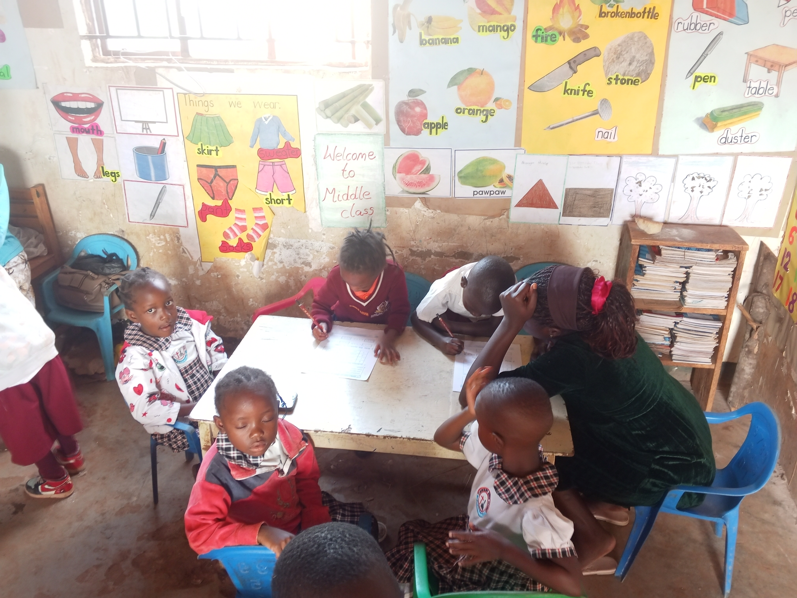

Early Childhood (Nursery)
Baby, Middle, and Top Class focus on foundational literacy, numeracy, creative play, and social skills.
We support pupils as they begin school and prepare for PLE and secondary school.
Baby, Middle, and Top Class focus on foundational literacy, numeracy, creative play, and social skills.
Children build strong reading, writing, mathematics, and oral communication skills in a caring classroom setting.
Comprehensive learning in English, Mathematics, Integrated Science, and Social Studies prepares pupils for PLE.
Football, netball, athletics, Music, Dance & Drama, debate, and computer literacy enrich school life.
Snapshots of pupils studying, practising, and learning together.



Learning beyond the classroom
Music, Dance & Drama and other co-curricular activities give pupils opportunities to share their talents, collaborate, and celebrate their community.
Planning for school
See suggested tuition estimates by class and contact the office to confirm current approved charges.
We look forward to welcoming you and your family.